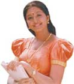

Gopika
made it big in the Tamil film industry thanks to the huge success
of Cheran’s Autograph. Her Malayalam film 4 The People completed its
silver jubilee run in Kerala and the song ‘Lejjavathiyae ...’ became
popular. She came to be identified in Kerala as ‘Lejjavathiyae ...’
girl. When Autograph and 4 The People were remade in Telugu, they
became hits too. And soon Gopika became popular in all the three South
Indian languages. Gopika speaks about her journey to the top ...
How does it feel to be a top actress in such a short span?
Frankly, I had no intention of joining films. I won a beauty contest
back in my hometown Thrissur and did a couple of ads for a popular
jewellery shop. Soon enough, film offers started pouring in but I
was not keen on joining films. Thaha, a photographer and family friend,
asked me to take up Thulasidas’s film Pranayamani Thooval with Vineeth
as the co-star. But the film did not do well. Next was the Jayraj
film. After seeing the stills of 4 The People given by cinematographer
RD Rajshekar, Tamil director Cheran sought me out for his film. After
all the tests, I was made one of the heroines in his film Autograph.
Though there were two other actresses including Sneha, my role was
spoken about very highly. The role of a Malayalee girl went down well
with the masses. Both my films were released on the same day and both
were hits. Both successfully completed a silver jubilee run too. People
identified me and appreciated my performance in both the languages.
When they decided to do the film in Telugu, it was natural that I
do the role. Anyway, I thank the Almighty for my success.
How has your experience with the Telugu industry been?
Like I said, when 4 The People and Autograph was remade in Telugu,
I was the natural choice. Autograph was remade as Naa Autograph and
I played the same role. In fact, except for Bhumika, all the other
three heroines had worked in the Tamil original. Next was Letha Manasulu,
the remake of Azhagy where I played Devyani’s role. Letha Manasulu
is another author-backed role where I played a powerful character
of a woman who has to take on her husband’s mistress. A lot of thought
had gone into the characterisation. There was no vulgar dialogue in
the film. My co-stars Ravi Teja and Srikanth are professionals. One
is a mass hero and another has family hero sentiment. Both put me
at ease and never behaved like big stars with me. In fact, it has
been a pleasant experience working in Telugu. The people have been
nice and sweet. I have also acted in a Kannada film titled Kanasina
Loka.
What about the other films that you have signed?
Vesham with Mammootty has been released for which I bagged the Aisanet
award. The film was an eye-opener. Everybody said Mammootty was a
hot-tempered guy but I found him to be very friendly. He even gave
me tips on acting. Fingerprint with Jayram as my co-star released
recently. On the sets of Fingerprint, the director used to get irritated
because I was always laughing at the jokes cracked by Jayram. Now
I am doing Chanthupotu with Dilip as the hero and directed by Lal
Jose. In Tamil, I am now doing Thotti Jaya with Simbhu and Kana Kandean
with Srikant. It is KV Anand’s first film as the director.
What’s your role in Thotti Jaya?
Here again, I play the role of a homely girl. Silambarasan plays the
male lead. The entire story happens in Kanyakumari and Nagercoil and
a few scenes were shot in Kolkata. I have donned the role of a college
student. There’s enough scope for me to prove my acting credentials
in the film.
In Kana Kandean, you seem to have done a few close scenes
with Srikant.
If you see the song, it hardly comes for a flash of a second. When
it is splashed as a photograph it looks sensuous. In fact even KV
Anand was surprised to see the stills. I am playing Srikant’s wife,
a homely girl in the film. Prithviraj has a very good role. It was
fun working with the two heroes.
You speak good Tamil. Why don’t you dub in your own voice
for your films?
When I was doing my first film itself, Thulasidas told me that my
voice was not good and thus he used a dubbing ariste. In Autograph,
the dialogue had a mix of Malayalam and Tamil. Cheran felt that it
would be better that I dubbed in my own voice and I did so. In Vesham
and Fingerprint, I was not asked to dub.
During the shooting of Autograph, it is rumoured that Cheran
used to yell at you a lot.
(laughs) Since I did not know the language then, I did not know what
he was saying. I just kept quiet and did not bother to respond.
Will you venture to do glamorous roles in future?
I want to do good performance-oriented roles and don’t mind waiting
for them. After the completion of Autograph, I got more than 20 offers.
Those offers didn’t go well with me as most of them demanded glamour.
Only a good character role is my goal.
What if good roles don’t come your way?
I’m prepared to wait. For me, quality is more important than quantity.
I want to establish myself as an actress, competent enough to play
any character with ease. I never dreamt of a career in films and so
I don’t mind sitting at home if good roles don’t come.
Is it true that your sister is coming to films also?
(Laughs) Even I have heard about it. Offers came after the industry
people saw her at the muhurat of Thotti Jaya. But she plainly refused
anything to do with films. Now she even refuses to come to the sets
with me.